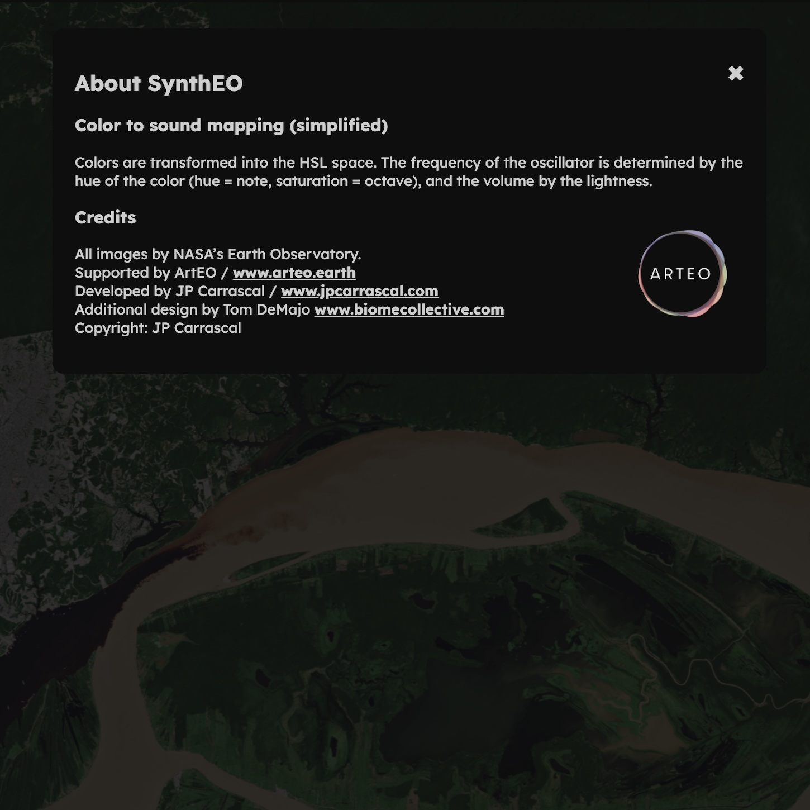

Synesthetic synthesizer based on satellite image sonification. Supported by ArtEO.

SynthEO is a sonification system that analyzes and extracts the color palette from satellite images and converts them into interactive soundscapes. In its current version, it uses a library of satellite images provided by ArtEO for the ArtEO Pioneers program. It runs on desktop or mobile browsers.
The system maps specific colors to sound synthesis parameters, allowing users to explore and manipulate visual data through sonic interaction. SynthEO offers a unique synesthetic experience, where users can 'hear' the visual characteristics of satellite images, creating an aesthetic experience and an additional layer of interpretation of the environmental data represented in the images.